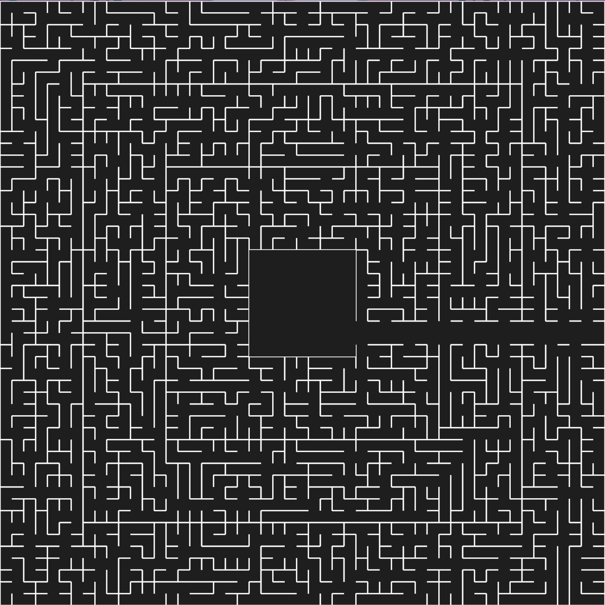
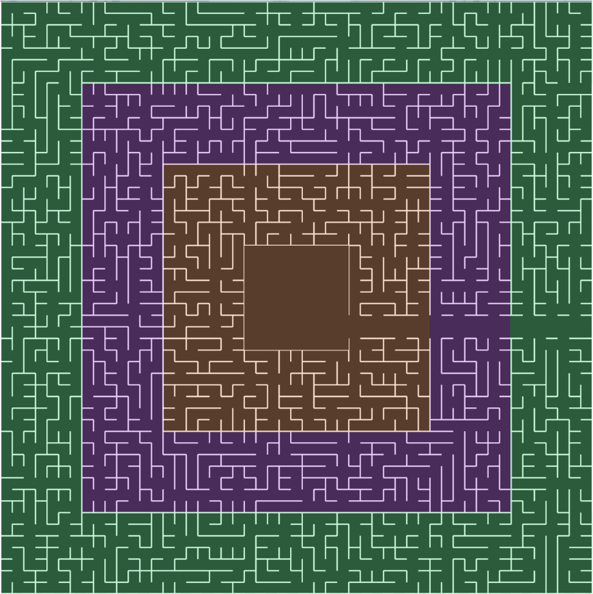
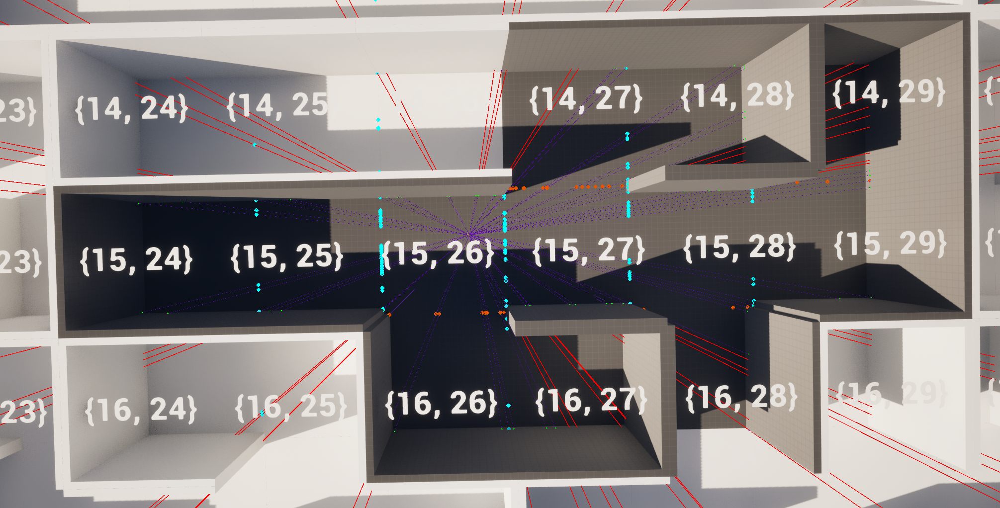

Project presentation
Some background
At the beginning of 2024, I decided to embark on the adventure of creating my first video game, as a solo developer. The aim was to carry out a fairly ambitious project, both as a personal challenge and to enrich my portfolio.
General idea
In this five-player cooperative game, players are teleported to a laboratory imbued with a strange electrical energy. As they explore the premises, they discover that the experiments being conducted seem to revolve around a gigantic machine occupying a large part of the room. On leaving the laboratory, they realize they are in the middle of a huge labyrinth. Embodying characters of various races and origins, they must join forces to find their way out and understand where they are, while looking for a way home. However, entering the labyrinth proves to be more difficult thant expected, and they will have to tread carefully to prepare themselves for the trials that lie ahead. The game is highly cooperative, meaning that each player controls a character of a certain class, and each class is needed at a given point in the game, so that each player has a role to play.

Logbook
Introduction
The aim of this logbook is to publish, a bit like a blog, the various progresses of the project : problems encountered, new features, prototypes, etc... The elements covered can be more or less technical, so don't hesitate to contact me if you have any comments or questions !
Initial report : a tour of implemented features
The labyrinth generator
To have a game with labyrinths, you need.. a labyrinth generator ! However, it needs to have a few special features to suit the gameplay loops I want to integrate. What's more, it has to be easy to replicate for all players, without having to send its entire structure over the network. As I'd never worked with labyrinth generation before, I looked into the various algorithms that exist in order to select one.
I based my choice on Prim's algorithm, not only for it's speed, but also for the fact that it doesn't generate long, straight lines, which could be tiring for players. The generator is deterministic and based on a seed, which is distributed to all clients when the game loads, so that each of them generates the labyrinth locally.
Here is an example of a generation :

As you can see, this is not a classic labyrinth. In the middle, there's an area containing the laboratory, where players will appear and which will serve as their base of operations throughout the game. Then there's this large, empty corridor that seems to lead directly outside the labyrinth. The labyrinth is in fact divided into X areas (here 3), highlighted in this image:

Initially, moving from one area to another will be impossible, and players will have to equip themselves in the accessible area(s), then face the major test that awaits them as they move to the next zone, on the large corridor. This mean players don't have to figure out how to get to the next zone, to avoid long games, but they will still have to visit the entire labyrinth to find the resources they need.
From a developer's point of view, I've provided the generator with a huge number of parameters, so that I can adapt the labyrinth as I see fit if I feel a balancing act is necessary for the gameplay (reducing the size of the labyrinth for shorter games, increasing the number of zones for a richer game, etc.).
Dynamic tile loading
As the labyrinth can grow quite large, it's not advisable to load all its contents for each client. I therefore implemented a dynamic tile loading system, which only loads tiles in a client's line of sight.
Assuming that the character has an omnidirectional view, the aim is to draw a line towards each corner of the current tile, then perform the same operation for each square crossed by a line.
For example, in the image below, the character is represented by the red dot. Green squares are those to be loaded at this stage, req squares are those to be processed at the next stage, and orange squares are those already processed and loaded. In the initial step, the current tile is loaded, then a line is draw towards each corner. Each tile crossed is then added to the tiles to be tested next.

For the next step, the same operation is performed for each tile added in the previous step, and so on.

Here's the result obtained in the engine. Here, the grey tiles are loaded, and the white ones are not. There is, howerver, one adaptation to be made for the game, since the walls of the labyrinth are of a certain thickness, and so two lines must be drawn in order to test both sides of the wall.

Server side, I still have a few things to deal with, such as the fact that for each client, the server only needs to load the player's current tile in order to load the obstacles and avoid desynchronization, but a problem will surely arise when I work on AIs, which will need all the obstacles to determine pathfinding.
Other implemented features
Here's a list of other features already implemented, but which I won't go into too much detail about, so as not to give too much away :
- Teleporting from one universe to another
-
Early on in the game, players will discover that they can travel through different universes. They'll be able to rediscover the same labyrinth, but in a completely different biome, and find other resources to advance their quest.
- Object interaction and inventory
-
A classic in many games, the object interaction system is one of the basic elements of many gameplay loops, which is why I was keen to implement it quickly. In the same vein, I've implemented the inventory and crafting systems, so that these three systems work properly together.
- Electricity system in the laboratory
-
Electricity will be a key energy source in the laboratory, and in the same way as the interaction and inventory systems, I wanted to implement this system quickly, as many other elements depend on it. This system will therefore manage the energy supply of the elements that require it, and will also change the lighting ambience of the laboratory according to the different states.